MILEAF / 湖畔 / 2026.10.28 / 方案待评审
首屏读结果与趋势，再看节奏、条件、账目和长期；右图为能耗专题。
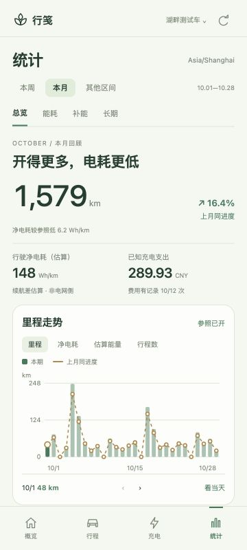
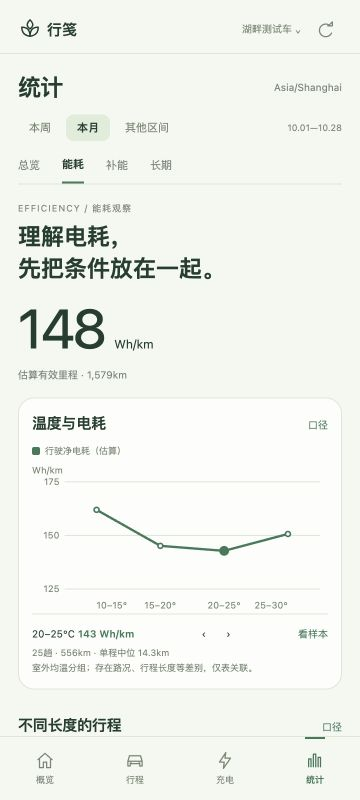
全部数字为合成。比较质量、用车分布、条件分析、长期/停放待补接口；充电覆盖/均价/地点已有0.2能力。不是正式Flutter或真实站点验收。
同一份合成记录 / 三种信息主次
推荐A为默认入口，吸收B的能耗分析与C的日历定位；并非三个新主导航。
更多内容 / 清楚的分母与证据
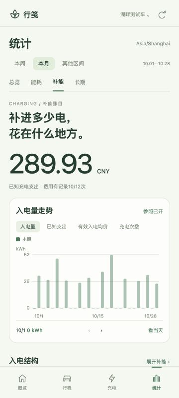
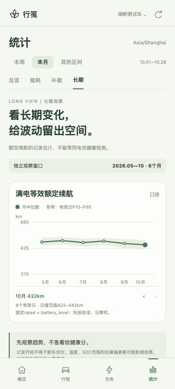
实际浏览器原型截图 / 360px / 合成数据
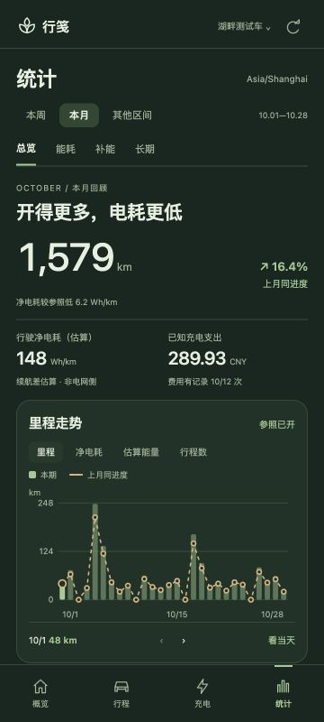
深色200%字号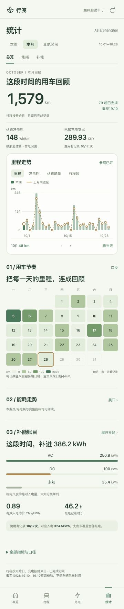
仅现有0.2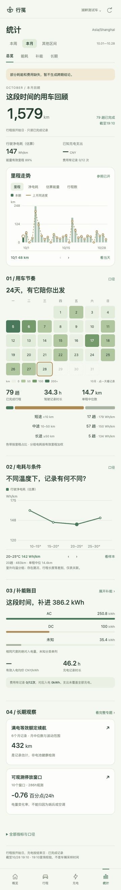
字段缺失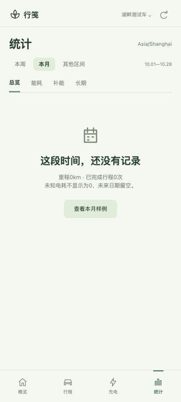
本期无记录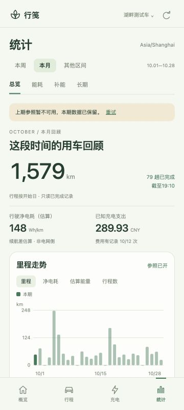
参照失败基期零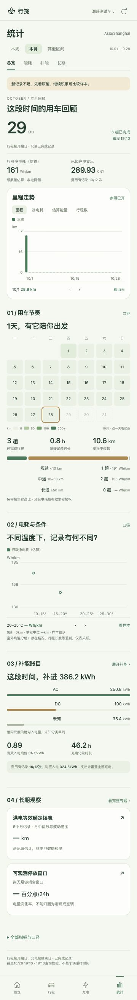
样本不足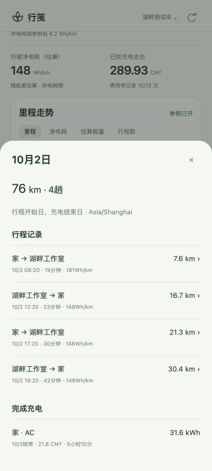
点日下钻浏览器原型检查不能代替Flutter、真实API、真机手势或系统读屏验收。